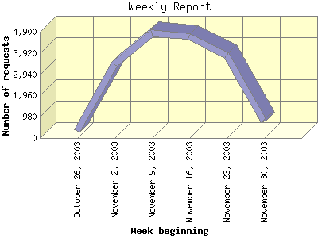

Report generated by Analog 5.91beta1 and Report Magic 2.21
|
Web Server Statistics for "Harish Narayanan (hnarayan) - November 2003" Report generated by Analog 5.91beta1 and Report Magic 2.21 |
The Weekly Report identifies the activity for each week within the report
time frame. Remember that one page hit can result in several server requests
as the images for each page are loaded.
Note: Depending on the
report time frame for this report the first and last week may not represent
a full seven day week, resulting in lower hits.

| Week beginning | Number of requests | Number of bytes transferred | Percentage of the bytes | Percentage of the requests | |
|---|---|---|---|---|---|
| 1. | October 26, 2003 | 344 | 7.294 MB | 2.67% | 1.93% |
| 2. | November 2, 2003 | 3,407 | 68.572 MB | 25.10% | 19.14% |
| 3. | November 9, 2003 | 4,820 | 71.702 MB | 26.25% | 27.07% |
| 4. | November 16, 2003 | 4,669 | 59.656 MB | 21.84% | 26.23% |
| 5. | November 23, 2003 | 3,789 | 56.790 MB | 20.79% | 21.28% |
| 6. | November 30, 2003 | 774 | 9.154 MB | 3.35% | 4.35% |
Most active week beginning November 9, 2003 : 1,125 pages sent. 4,820 requests handled. 75,184,498.00 served.
Weekly average: 2,967 requests handled. 45.528 MB served.
This report was generated on January 18, 2004 18:29.
Report time frame November 1, 2003 00:43 to November 30, 2003 23:58.
| Web statistics report produced by: | |
 Analog 5.91beta1 Analog 5.91beta1 |  Report Magic 2.21 Report Magic 2.21 |